Your Company Sales & Proposal Development Training Guide · 2026 Edition
A
Role Overview & Orientation
Proposal quality is the ultimate protection. It protects the client, the firm, and the project. This section is the foundation from which every other section draws its logic.
Your Company Associates, Inc. · [Company Address] · Internal Use Only · 2026
SECTION A · BRIEFINGS
Watch and Listen
Section Briefings
Watch the orientation walkthrough, then listen to the deep dive on the consultant's role and the Your Company standard. Study the section for the full methodology. All three formats cover the same material at different depths.
Video · Role Overview & Orientation
The orientation walkthrough: the firm, the role, the standard, and what separates elite performers.
Audio · The Consultant's Role & The Your Company Standard
The full orientation walkthrough, narrated.
Section A · Infographic
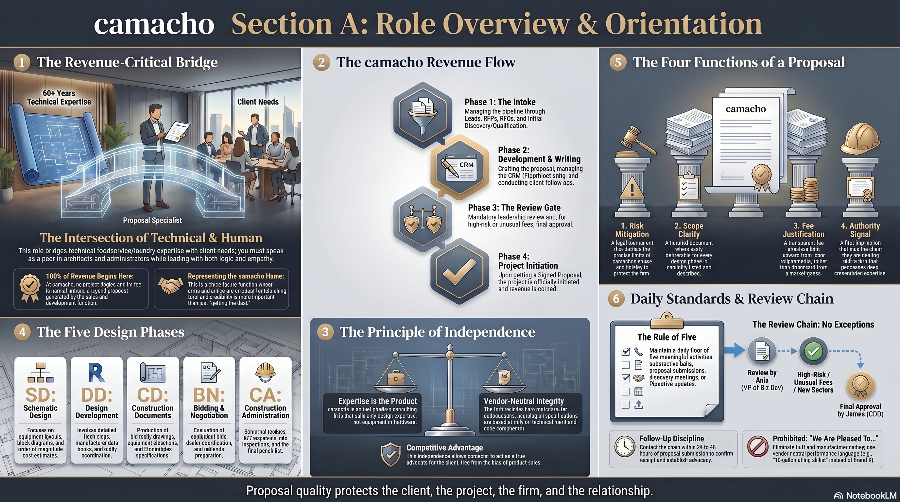
Section A · Concept Mind Map
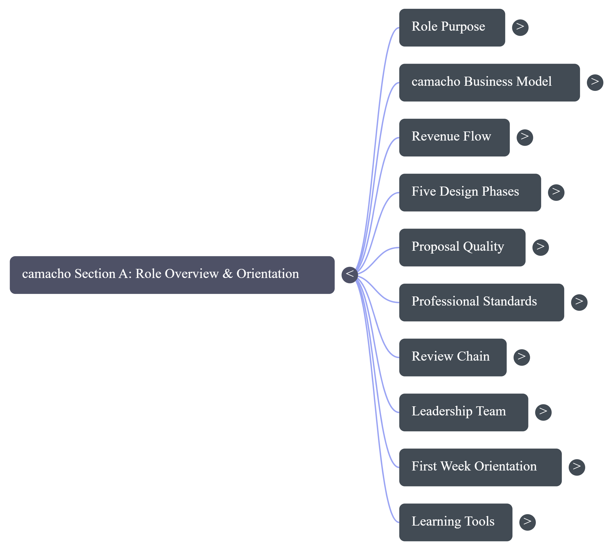
SECTION A · PRESENTATION
Full Slide Deck
The Business Standard
The complete presentation for this section. Each slide is embedded directly. Scroll through all 15 slides below.
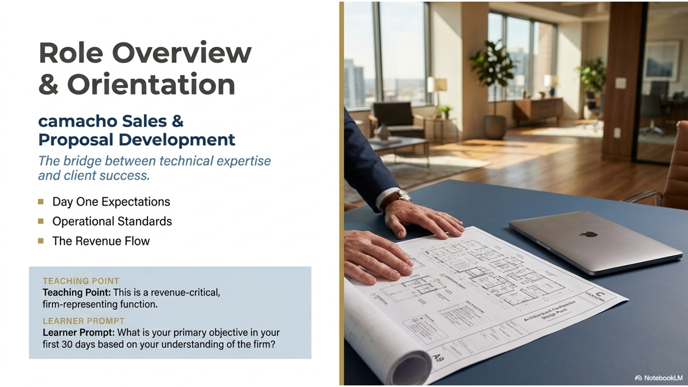
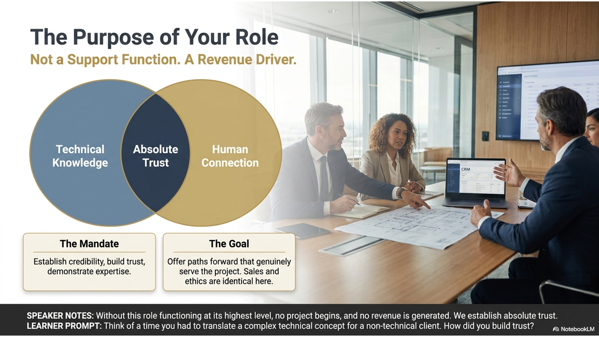
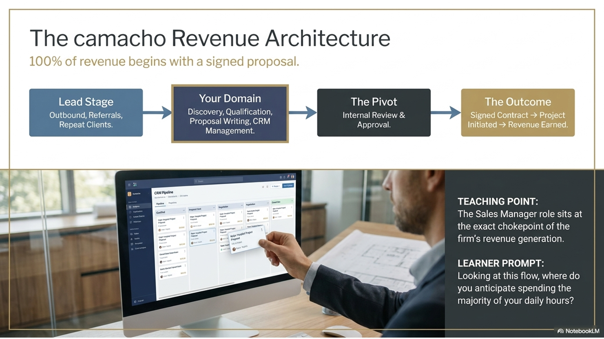
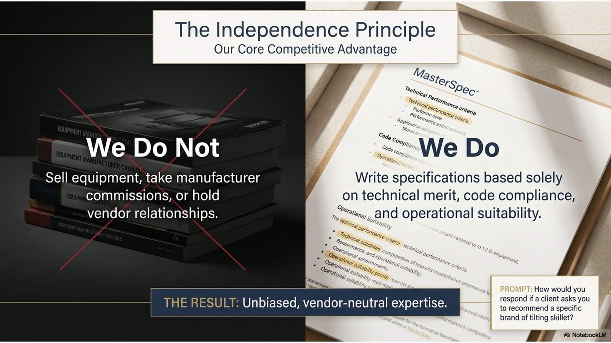
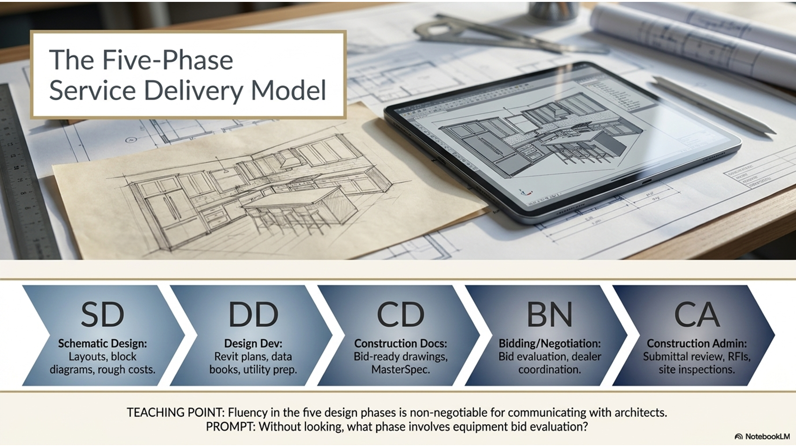
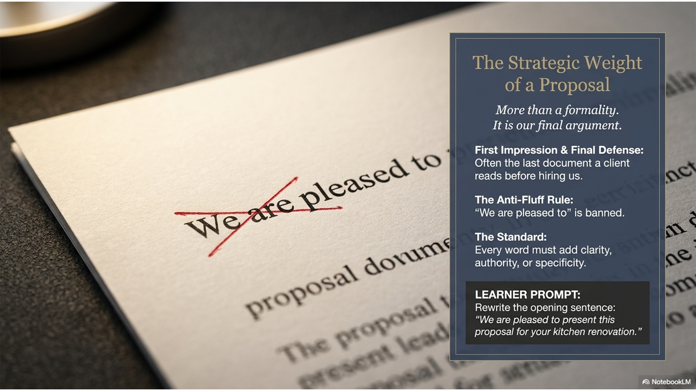
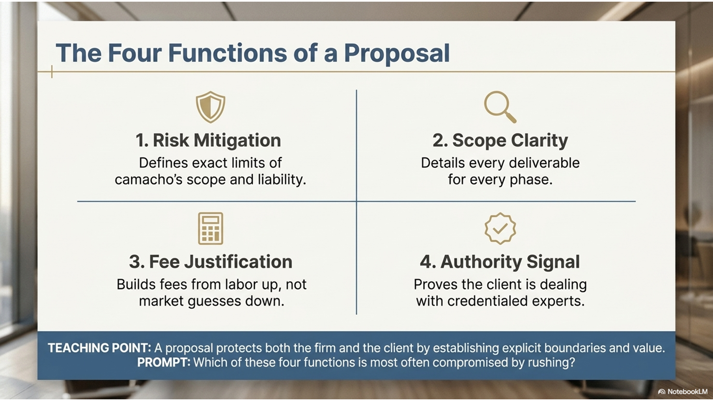
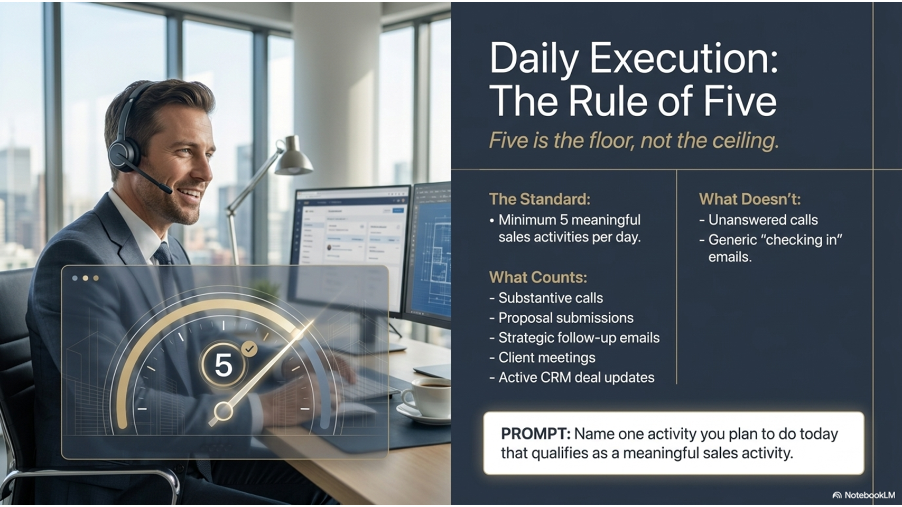
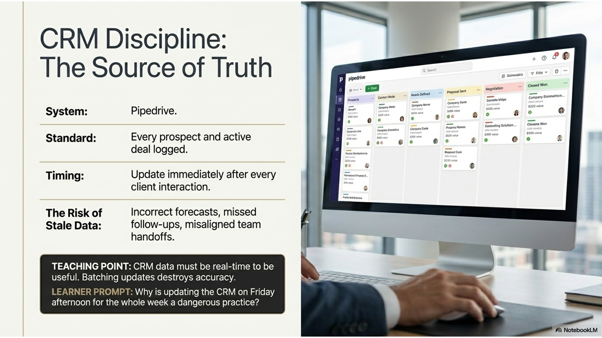
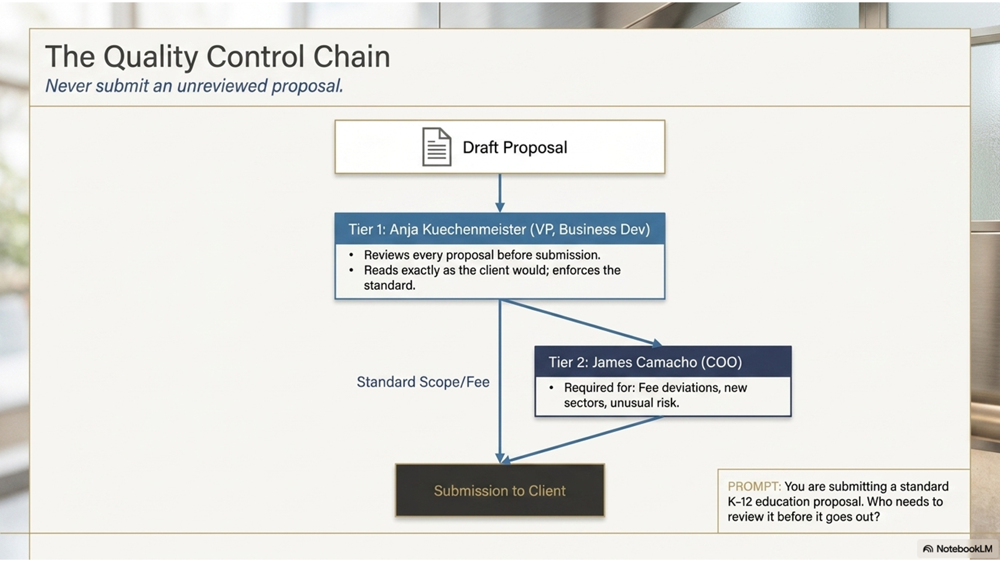
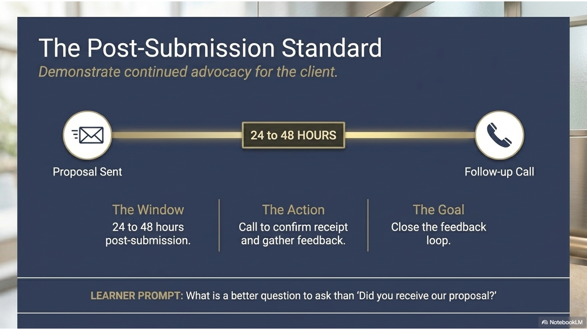
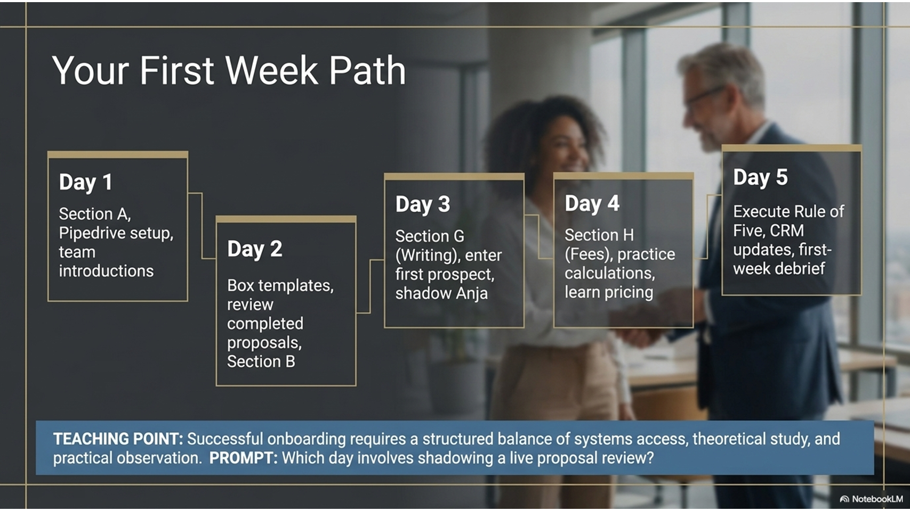
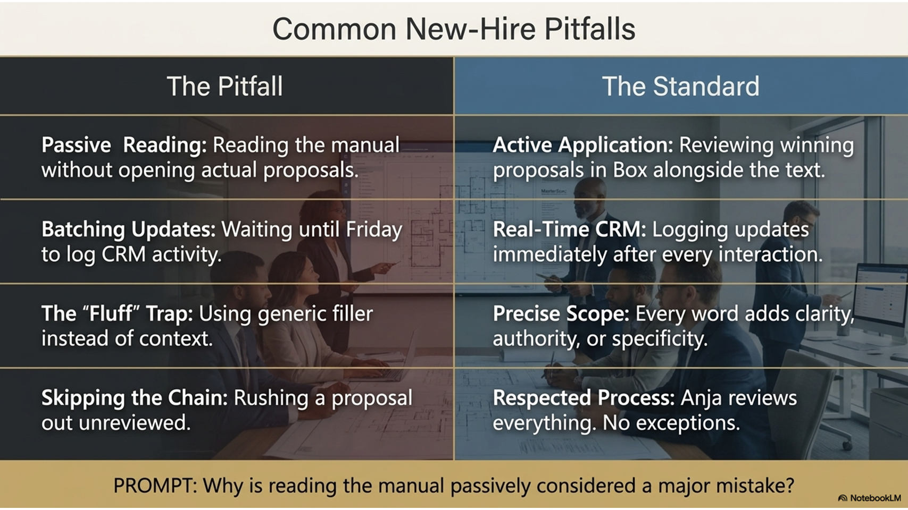
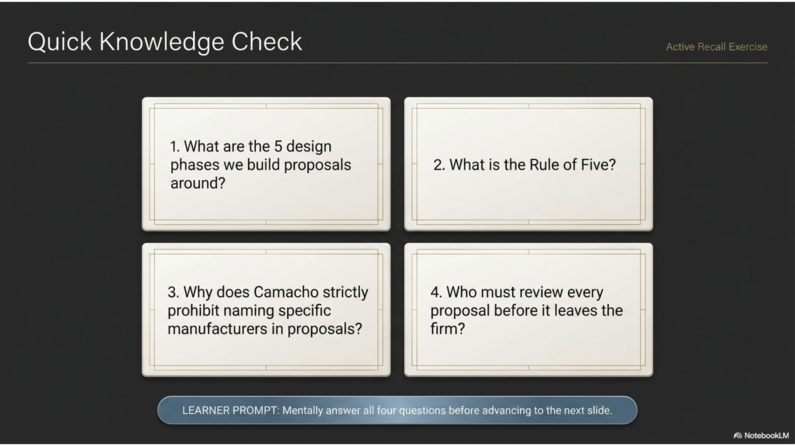
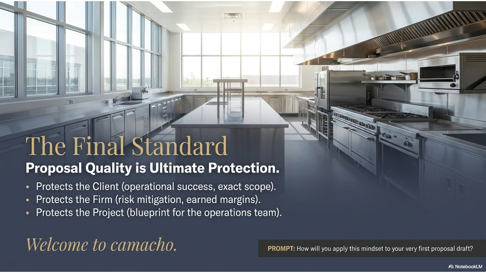
SECTION A · FOUNDATIONS
A.0 · Overview
The Your Company Standard
Your Company Associates has operated since 1962 with a single governing principle: proposal quality is the ultimate protection. Not a value statement, not an aspiration. A mechanism.
Proposal quality is the ultimate protection. It protects the client by defining exact scope so operations run without surprise. It protects the firm by pricing risk correctly and earning fair margins. It protects the project by creating the blueprint the operations team relies on from day one of construction through years of service.
This training manual is the mechanism that transmits this standard. Not the spirit of it, but the precise, reproducible method. Every section teaches one part of the discipline that produces a Your Company-quality proposal: the vocabulary, the psychology, the procurement intelligence, the fee arithmetic, the code knowledge, the file discipline. Together they describe what it means to work at the highest level of commercial design consulting.
The standard is not aspirational. It is operational. It exists in every proposal that leaves this firm, in every conversation a consultant has with a client, and in every decision about scope, fee, and delivery. You are reading this because you have joined a firm that holds itself to this standard, and you are expected to hold yourself to it as well.
❞ Expert Insight
"The proposal is not a formality. It is the document that defines what the client buys, what the firm delivers, and what the project is allowed to become. Every word in it is a decision, and every vague word is a decision that someone else will make later, usually under pressure, and usually at the firm's expense."
· Marketing Director
Figure A.0.1 · What Proposal Quality Protects
1
Protects
The Client
Exact scope means operations run without surprise. The client gets what was designed, not a compromise forced by ambiguity.
2
Protects
The Firm
Risk is priced correctly and margins are earned. Vague scope creates scope creep, which costs the firm hours it cannot bill.
3
Protects
The Project
The proposal is the blueprint the operations team uses. A precise proposal runs the project. An imprecise one requires constant interpretation.
4
Protects
The Relationship
A proposal that performs exactly as written creates trust. The client whose project delivers as scoped calls back with the next one.
▦ Rule of the House
Every proposal that leaves Your Company is reviewed before it goes. Not because consultants make mistakes, but because a second set of expert eyes is the mechanism that keeps the standard consistent. The review step is not optional and does not come after the deadline.
SECTION A · FOUNDATIONS
A.1 · The Firm
The Firm: Six Decades of Commercial Design
Your Company Associates, Inc. has operated at the intersection of commercial design, operations, and regulatory compliance since 1962. The firm's longevity is not accidental; it is the product of institutional precision applied consistently across sixty-plus years of engagements.
Your Company Associates, Inc. is headquartered at 3103 Medlock Bridge Road in [City, State]. The firm has spent more than six decades building the knowledge base, the client relationships, and the methodological precision that define its reputation in commercial foodservice and laundry design consulting.
The firm operates in two primary disciplines: commercial foodservice design and commercial laundry design. Foodservice engagements range from a single restaurant in a boutique hotel to a multi-outlet food and beverage program across a resort campus. Laundry engagements cover everything from a hospital linen room to a high-volume commercial laundry serving a network of properties. The common thread is complexity: these are environments where the difference between a correctly engineered space and an incorrectly engineered one is measured in years of operational problems and wasted capital.
Your Company's clients include independent restaurant operators, hospitality management companies, healthcare systems, universities, and private clubs across the southeastern US and beyond. What they share is that they have come to Your Company because they want the problem solved correctly, not approximately.
Three-business-day proposal turnaround · Pre-flight review on every proposal
☰ From the Files
The firm's client relationships are multi-decade in many cases. A property that hired Your Company for its original kitchen design returns for every renovation, expansion, and replacement cycle. Long-term relationships are built on one thing: the firm delivered exactly what it proposed, on scope and on fee.
✓ Best Practice
Know the firm's history well enough to explain it in a two-minute client conversation. Clients who understand they are hiring a firm with more than sixty years of specialized experience in their specific environment type trust the fee and the scope before the proposal is even read.
SECTION A · FOUNDATIONS
A.2 · The Consultant's Role
The Consultant's Role
The title is "consultant," but the function is closer to "trusted expert who walks the client from a problem to a solved space." A Your Company consultant owns the client relationship from first contact through project delivery.
At Your Company, the consultant is not a support function. The consultant is the primary point of contact, the subject-matter expert in the room, and the person whose name is on the proposal. This is not a role defined by junior hours and senior signatures; it is defined by accountability. The proposal is yours. The scope is yours. The fee defense is yours.
The day-to-day work spans the full arc of an engagement:
Receiving, reading, and analyzing RFPs and RFQs from clients or procurement offices
Client discovery meetings: the forensic process of learning what the client actually needs, covered in detail in Section E
Proposal writing, fee calculation, and scope definition using the methods in Sections G and H
Code and compliance review to ensure the proposed design is permittable and inspectable (Section I)
Coordination with architects, general contractors, and equipment vendors through delivery
Post-award project management through construction administration
The breadth of this role is what commands the fee. A client who can get a kitchen layout from a restaurant supply company is not looking for a Your Company consultant. The clients who call Your Company need someone who can read the operational intent, identify the regulatory constraints, calculate the correct fee for the correct scope, and deliver a design that runs the way the proposal said it would.
❞ Expert Insight
"The consultant who walks in and says 'tell me what you need' is already behind. The consultant who walks in and says 'based on your project type and scale, here is what you are going to need, and here is what it will cost to get it right' is the one the client trusts with the next project."
· Marketing Director
▦ Rule of the House
The consultant does not wait for the client to define the scope. The consultant's expertise exists precisely to define it correctly when the client cannot. A scope defined by the client without expert guidance is a scope that will need to be revised, and revisions after the proposal is signed are costly for everyone.
SECTION A · INDUSTRY CONTEXT
A.3 · The Design Landscape
The Commercial Design Landscape
Commercial foodservice and laundry design sits at the intersection of architecture, operations, engineering, and regulatory compliance. It is not a field where talented generalists improvise. The clients pay for specialized expertise that no generalist can replicate.
Commercial Foodservice Design
Commercial foodservice design encompasses the programming, layout, specification, and coordination of professional food preparation environments. Restaurants, hotel kitchens, employee cafeterias, hospital dietary departments, university dining halls, private club kitchens, catering operations: each has its own operational logic, code requirements, and equipment matrix.
A consultant who cannot read the operational intent behind a client brief cannot design for it. A hotel with 400 rooms and three food and beverage outlets has different throughput, staffing, and equipment requirements than a 100-seat independent restaurant. The design has to be built around the operation, not the other way around.
Commercial Laundry Design
Commercial laundry design covers the specification and layout of industrial-scale linen and textile processing facilities. Hospitals require on-premises laundry to meet infection control standards. Hotels generate volumes that demand engineered throughput systems. Country clubs and universities run specialized programs with specific fabric requirements and soil types.
The laundry consultant must understand capacity calculation, utility requirements including water, steam, gas, and electrical load, equipment selection, and layout for processing efficiency. A laundry specification that underestimates throughput will create a facility that cannot keep up with linen demand from the first week of operation.
The Regulatory Backbone
Both disciplines share a common regulatory framework that shapes every design decision before a single piece of equipment is specified. NSF International standards govern food equipment and material specifications. NFPA codes govern fire suppression, exhaust, and gas systems. Local health department codes, which vary by jurisdiction, govern sanitation, finish materials, and operational layouts. ADA compliance requirements apply to any public-facing commercial food service space. Understanding this regulatory environment is not optional; it is the expertise that the fee pays for.
⚠ Critical Knowledge Gap
A consultant who does not know the applicable code for a project cannot write a correct scope. A scope written without code knowledge produces a design that may not be permitted, which means a redesign after the proposal is signed, which is the most expensive mistake a consultant can make.
SECTION A · INDUSTRY CONTEXT
A.4 · How Deals Work
The Anatomy of a Won Deal
A deal does not begin with a proposal. It begins with a relationship, a need, and a conversation. Understanding the arc from first contact to signed contract is what allows a consultant to operate intentionally rather than reactively.
The pipeline from first contact to executed contract is not linear, but it is predictable. Each stage has a defined purpose and a set of deliverables. A consultant who does not understand the full arc cannot manage their position within it.
1
Lead or Invitation
A potential engagement arrives as a direct call from a client or referral source, or as a formal procurement document (RFP or RFQ). The consultant's first task is to assess fit: does this project align with Your Company's capabilities, and is the client a realistic decision-maker? Discovery begins at first contact, not at the formal discovery meeting.
2
Discovery
The forensic process of learning what the client actually needs, distinct from what they say they need. A discovery meeting is not a listening exercise; it is an expert interrogation. The consultant asks the questions that reveal operational constraints, regulatory exposures, and budget realities the client may not have considered. The full method is in Section E.
3
Proposal Construction
Fee is calculated, scope is defined, and the proposal is written. Sections F, G, H, and K all converge here: the procurement intelligence shapes the response format, the fee method determines the number, the writing standard governs the document, and the filing discipline governs what happens to the file. The proposal that leaves the firm is always reviewed before it goes.
4
Review and Delivery
Every proposal at Your Company is reviewed before it goes out. The three-business-day standard runs from RFP receipt to delivery. The proposal arrives on time, with correct scope and defensible fees. Arriving on time with a well-crafted proposal is itself a signal to the client about how the project will be managed.
5
Follow-Through
The proposal goes out, questions are answered, and the decision is made. Win or lose, the follow-through is professional and the file is correct. The won deal moves into project delivery with the signed contract filed. The lost deal stays in the precedent library to become the template for the next similar engagement.
✓ Best Practice
Win or lose, file the proposal correctly and note what the client's decision was. The firm's precedent library is built from both outcomes. A lost proposal with correct scope and fee math is valuable next time a similar project arrives. A won proposal filed incorrectly cannot be found when the project comes back for a renovation in five years.
SECTION A · EXCELLENCE
A.5 · The Professional Identity
The Professional Identity
Elite commercial design consultants share a set of operating disciplines that distinguish them from practitioners who are technically competent but not yet excellent. These are not personality traits; they are learned and practiced.
Technical competence is the minimum requirement for a Your Company consultant. The firm's reputation, and the consultant's fee justification, require more than competence. They require the operating disciplines that make competence visible to the client at every interaction.
Precision Over Speed, Always
The three-day turnaround is the standard because it is achievable at the highest quality level. A rushed proposal that ships in one day at lower quality is not an asset; it is a liability. The client who receives a proposal with errors may not say anything at the time, but they remember when the next engagement is being awarded.
The Proposal Is a Legal Document
A Your Company proposal defines what will be delivered, at what fee, under what scope. It is not a guess or an estimate. Vague proposals create disputes because they leave the definition of "what was promised" open to interpretation. Precise proposals protect everyone: the client, the firm, and the project.
Expertise Commands the Room
A Your Company consultant who walks into a client meeting must be the most knowledgeable person in the room on the subjects of commercial kitchen design, laundry design, code compliance, and fee engineering. This is not arrogance; it is the credential that justifies the fee. The client is not hiring a vendor; they are hiring an expert.
Silence Is a Signal
When a client asks a question the consultant does not know the answer to, the correct response is to say so and commit to a response time. The consultant who guesses and gets it wrong loses the relationship. The consultant who admits the knowledge gap and fills it correctly gains one of the most durable forms of client trust: the confidence that comes from demonstrated intellectual honesty.
❞ Expert Insight
"The consultant who cannot say 'I don't know, but I will find out and have it to you by Thursday' will eventually say something wrong with confidence, and that is the moment the relationship ends. The willingness to know the limit of your knowledge is itself a form of expertise."
· Marketing Director
SECTION A · EXCELLENCE
A.6 · Core Service Lines
Core Service Lines in Detail
Understanding the two core service lines in depth is foundational before engaging with any client. The wrong framing of a project leads to an incorrect scope, and an incorrect scope creates problems that outlast the proposal.
Foodservice Design: The Five-Phase Framework
A foodservice design engagement typically moves through five phases. The programming phase is where Your Company learns the operational intent: cuisine type, covers per hour, service style, regulatory environment, and equipment preferences. Everything after programming is translation of that operational intent into engineered space.
Figure A.6.1 · The Five Phases of a Foodservice Design Engagement
Phase
What Happens
Key Deliverable
1. Programming
Operational intent is documented: menu, throughput, service style, code environment
Project program
2. Schematic Design
Conceptual layouts and equipment categories are developed and presented to the client
Schematic drawings
3. Design Development
Layouts are refined, equipment is specified, utility requirements are defined
Design development drawings
4. Construction Documentation
Permit-ready drawings and specifications are produced for the GC and sub-contractors
Construction documents
5. Construction Administration
Shop drawings reviewed, site visits made, punch list completed, operation confirmed
Project closeout
Laundry Design: The Throughput Imperative
Laundry design moves through similar phases, with a heavier emphasis on capacity calculation and utility engineering at the outset. The first question in every laundry engagement is throughput: how many pounds of linen per day, in what categories (food and beverage, terry, bath, specialty), with what turnaround time requirement.
From throughput, all downstream decisions follow: the equipment matrix, utility loads (water, steam, gas, electrical), floor area required, and the staffing model. A laundry design that does not begin with throughput is designed backward, and the consequences appear the first week of full operation when the facility cannot keep pace with linen demand.
▦ Rule of the House
Never propose a laundry design without completing a throughput calculation first. A facility sized for 4,000 pounds per day that operates at 6,000 pounds per day is a client crisis in the making, and the proposal that did not calculate throughput correctly is the document that proves the consultant did not do the analysis.
SECTION A · OPERATIONS
A.7 · The Three-Day Standard
The Three-Day Standard
Your Company's most operationally defining commitment is the three-business-day turnaround from RFP receipt to a completed proposal in the client's inbox. This is not a stretch goal; it is the standard.
The three-day standard is achievable because the systems in this training manual are in place: the fee calculation methodology is mastered (Section H), the proposal template is precise (Section G), the file discipline is practiced (Section K), and the vocabulary of the field is fluent (Section B). When every part of the method is internalized, three days is enough time to produce a proposal that would take a less-prepared competitor two weeks.
The three-day standard is also a competitive weapon. Most competitors take longer. A client who receives a well-crafted, professionally formatted Your Company proposal in three days, against competitors who take ten, has already formed an opinion about which firm is organized and capable, before a single fee number is evaluated.
Figure A.7.1 · The Three-Day Window
1
Day One
Analysis and Programming
Read the RFP or RFQ in full. Identify the client type, project scope, service environment, and any code or regulatory signals in the document. Build the project program.
2
Day Two
Fee and Draft
Calculate the fee using the five-phase labor model (Section H). Write the proposal using the Your Company template (Section G). File every version correctly in the project folder (Section K).
3
Day Three
Review and Delivery
The proposal is reviewed before it goes. The review step is non-negotiable and is completed within Day Three, not after it. The proposal arrives in the client's inbox by end of business.
4
Always
File As You Go
The project folder is named and the file is saved at creation. The sent version is preserved when it goes out. Filing is part of the cadence, not a cleanup step after the deadline.
✓ Best Practice
When an RFP arrives, immediately create the project folder in the shared system using the Year-Month-XX naming convention and save a working file. The three-day clock starts at receipt, and Day One is consumed faster than expected if the first hour is spent deciding where to save the document.
SECTION A · OPERATIONS
A.8 · The First 90 Days
Your First 90 Days
The orientation period is the time to build the foundation. Every section of this training manual teaches one piece of the discipline. The first 90 days is the period in which those pieces are practiced until they are fluent.
The goal of the first 90 days is not mastery in every area. It is fluency in the method and confidence in the vocabulary. A new consultant who cannot yet calculate a fee independently but who knows the five phases, understands the procurement document landscape, and can conduct a competent discovery meeting is on the right trajectory. Mastery follows fluency; fluency does not follow mastery.
Figure A.8.1 · The 90-Day Orientation Roadmap
Weeks 1 and 2: Foundations
Study Section A (this section) and Section B. Understand the firm, the role, and the vocabulary of the field.
Read the full glossary in Section L once as orientation. Return to it when a term is encountered in a client context.
Attend at least one client meeting as an observer. Note vocabulary, the discovery method, and how scope is discussed.
Weeks 3 and 4: Sales and Client Psychology
Study Section C (Sales and Marketing) and Section D (Client Psychology).
Begin participation in discovery calls. Observe how questions are sequenced and how the consultant controls the diagnostic frame.
Study the RFP and RFQ formats in Section F before reading any live procurement documents the firm receives.
Weeks 5 and 6: Discovery and Procurement
Study Section E (Information Gathering and Discovery) in detail. Master the discovery framework before leading a meeting.
Lead one discovery meeting with supervisor present. Debrief the meeting against the discovery framework in Section E.
Review one active or recent RFP using the Section F procurement intelligence framework.
Weeks 7 and 8: Proposal and Fee Engineering
Study Section G (Proposal Writing Mastery) and Section H (Fee Calculation and Pricing).
Build one complete proposal from scratch using the Section G template. Calculate the fee independently using the Section H method. Have both reviewed.
File the practice proposal in the shared system using the Section K naming convention.
Weeks 9 and 10: Code, Compliance, and Strategy
Study Section I (Code, Compliance, and Health Department) and Section J (Meeting Evaluation and SWOT).
Identify the code and regulatory requirements for one project type the firm currently has in its pipeline.
Participate in one SWOT-structured evaluation meeting for a live or upcoming proposal.
Weeks 11 and 12: Systems and Reference
Study Section K (File Naming, Organization, and Systems), Section N (Calculation Tools), and Section M (Reference Section).
Use the Section N calculators on one past or current project. Verify the output against the filed proposal.
By the end of Week 12, be able to run a complete proposal cycle from RFP receipt to delivery, with supervisor review.
Day 90 Checkpoint
Sit down with your supervisor and review one complete proposal from the past 30 days against the Section G checklist.
Identify one area where the proposal would have been stronger if you had applied the training manual method more rigorously.
Commit to a specific practice schedule for the area identified.
❞ Expert Insight
"The first 90 days is not the time to be brilliant. It is the time to be methodical. The consultant who spends the first 90 days mastering the method, even imperfectly, has a foundation the consultant who tried to improvise from week one will spend the next three years trying to build."
· Marketing Director
SECTION A · ASSESSMENT
✓ Comprehensive Test
Twelve Questions on Role, Firm, and the Your Company Standard
Twelve questions across all nine subsections. Each has one correct answer. Work through them in one sitting, mark your answers, then check against the answer legend. A passing score is ten correct. Below eight, re-read the subsections referenced in the legend.
1
Your Company Associates, Inc. was founded in:
A1972
B1985
C1962
D1945
2
Your Company's standard turnaround from RFP receipt to proposal delivery is:
ASame business day
BThree business days
CFive business days
DOne week
3
Your Company's two primary disciplines are:
AArchitecture and engineering
BResidential design and hospitality consulting
CCommercial foodservice design and commercial laundry design
DCode compliance and project management
4
Proposal quality is described as "the ultimate protection" because it:
AGuarantees the client will sign
BProtects the client, the firm, and the project simultaneously
CReduces the fee needed to win the work
DEliminates the need for a legal contract
5
The first step in the anatomy of a won deal is:
AProposal construction
BDiscovery
CLead or invitation
DReview and delivery
6
In a laundry design engagement, the foundational first question is always:
AThe total equipment budget
BThe preferred vendor list
CThroughput: pounds of linen per day by category
DThe color palette and finish materials
7
Your Company's headquarters is located in:
AAtlanta, GA
B[City, State]
CCharlotte, NC
DNashville, TN
8
The three-day standard is a competitive advantage because:
AIt reduces the fee by cutting work hours
BIt is required by most RFPs
CMost competitors take longer, so Your Company signals organizational capability before the fee is even evaluated
DIt allows more revisions before delivery
9
When a client asks a question the consultant cannot answer, the correct response is:
AGuess and move on
BDeflect to a different topic
CAdmit the knowledge gap and commit to a specific response time
DAsk the client what they think the answer is
10
The five phases of a foodservice design engagement are:
ABid, design, review, approve, deliver
BDiscover, scope, price, propose, close
CProgramming, Schematic Design, Design Development, Construction Documentation, Construction Administration
DInterview, draft, review, send, invoice
11
At the 90-day checkpoint, a new consultant should be able to:
ALead all client engagements without supervision
BDesign a complete commercial kitchen independently
CRun a complete proposal cycle with supervisor review
DManage construction administration on a live project
12
The regulatory frameworks that shape commercial design decisions include:
ANSF, NFPA, local health department codes, and ADA requirements
BOSHA, EPA, FDA, and USDA only
COnly the local building code
DNo external codes; design standards are set by the firm
SECTION A · ASSESSMENT
☑ Answer Legend · Part 1 of 2
Answers and Explanations · Questions 1 through 6
The correct answer is given for each question, followed by the reasoning and a cross-reference to the subsection where the concept was taught. If an explanation surprises you, return to the source subsection and re-read with the answer in hand.
Question 1
Correct: C · 1962
Your Company was founded in 1962. Over six decades of operation have produced the institutional knowledge base, client relationships, and methodological precision that define the firm's reputation. See A.1.
Question 2
Correct: B · Three business days
The three-business-day standard runs from RFP receipt to a completed proposal in the client's inbox. It is achievable because the method is internalized, not because corners are cut. See A.7.
Question 3
Correct: C · Commercial foodservice design and commercial laundry design
Your Company operates in two primary disciplines. Both sit at the intersection of architecture, operations, engineering, and regulatory compliance. See A.1 and A.6.
Question 4
Correct: B · Protects the client, the firm, and the project simultaneously
Proposal quality protects the client (exact scope prevents operational surprises), the firm (correct risk pricing), and the project (a blueprint the operations team can rely on). See A.0.
Question 5
Correct: C · Lead or invitation
A deal begins with either a direct call or a formal procurement document. Discovery begins at first contact, not at the formal discovery meeting. The consultant's first task is to assess fit. See A.4.
Question 6
Correct: C · Throughput: pounds of linen per day by category
All downstream decisions in a laundry engagement, including equipment matrix, utility loads, and floor area, follow from throughput. A laundry designed without a throughput calculation is designed backward. See A.6.
SECTION A · ASSESSMENT
☑ Answer Legend · Part 2 of 2
Answers and Explanations · Questions 7 through 12
The remaining answers, with reasoning and subsection cross-references. Review every question you missed against its source subsection before moving on to the flashcards.
Question 7
Correct: B · [City, State]
Your Company is headquartered at [Company Address] 30071. State abbreviations (GA, not Georgia) are used throughout Your Company documents. See A.1.
Question 8
Correct: C · Most competitors take longer, so Your Company signals organizational capability before the fee is even evaluated
A client who receives a well-crafted Your Company proposal in three days, when competitors take ten, forms an opinion about firm capability before the numbers are compared. See A.7.
Question 9
Correct: C · Admit the knowledge gap and commit to a specific response time
Intellectual honesty is one of the most durable forms of client trust. A consultant who guesses incorrectly loses the relationship. One who fills the gap correctly, on time, gains it. See A.5.
Question 10
Correct: C · Programming, Schematic Design, Design Development, Construction Documentation, Construction Administration
These five phases are the standard arc of a foodservice design engagement. The fee calculation method in Section H is structured around this same five-phase framework. See A.6.
Question 11
Correct: C · Run a complete proposal cycle with supervisor review
By Day 90, the goal is fluency in the method, not independent mastery. The consultant who can run a complete cycle, with review, is on the right trajectory. Mastery follows fluency. See A.8.
Question 12
Correct: A · NSF, NFPA, local health department codes, and ADA requirements
These four regulatory frameworks shape every commercial design decision before a single piece of equipment is specified. A consultant who does not know the applicable code cannot write a correct scope. See A.3.
SECTION A · STUDY TOOLS
◆ Flashcards · Reference Grid
Twelve Cards · Front and Back
Twelve flashcards covering the working concepts of Section A. Read the front, recall the back, then check. The interactive flip cards on the next page are for active practice.
1The Your Company Standard
Proposal quality is the ultimate protection. Protects the client (exact scope), the firm (correct risk pricing), and the project (operational blueprint).
(A.0)
2Your Company Founded
1962. Headquartered at 3103 Medlock Bridge Rd, [City, State]. Six decades of commercial foodservice and laundry design consulting.
(A.1)
3Commercial Foodservice Design
Programming, layout, specification, and coordination of professional food preparation environments. Restaurants, hotels, hospitals, universities, clubs, catering.
(A.3, A.6)
4Commercial Laundry Design
Specification and layout of industrial-scale linen processing. Capacity calculation, utility engineering, equipment selection, processing layout. Always starts with throughput.
(A.3, A.6)
5The Three-Day Standard
RFP receipt to completed proposal in the client's inbox in three business days. Day 1: analysis. Day 2: fee and draft. Day 3: review and delivery.
(A.7)
6Anatomy of a Won Deal
Five stages: Lead or invitation, Discovery, Proposal construction, Review and delivery, Follow-through. Win or lose, the file is correct.
(A.4)
7Proposal as Legal Document
A Your Company proposal defines what will be delivered, at what fee, under what scope. Vague proposals create disputes. Precise proposals protect everyone.
(A.5)
8Five Phases of Foodservice Design
Programming, Schematic Design, Design Development, Construction Documentation, Construction Administration. The fee method in Section H is built around these phases.
(A.6)
9Throughput (Laundry)
The foundational first question in laundry design: pounds of linen per day, by category. All equipment, utility, and layout decisions follow from throughput.
(A.6)
10The Regulatory Backbone
NSF, NFPA, local health department codes, and ADA requirements. These shape every design decision before a single piece of equipment is specified.
(A.3)
11The Elite Consultant Disciplines
Precision over speed. Proposal as legal document. Expertise in the room. Intellectual honesty: admit the knowledge gap, fill it correctly, on time.
(A.5)
1290-Day Orientation Goal
Fluency in the method, not mastery. By Day 90: able to run a complete proposal cycle with supervisor review. Mastery follows fluency.
(A.8)
SECTION A · STUDY TOOLS
□ Flashcards · Interactive
Tap the Card to See the Answer
The same twelve cards, one at a time. Read the front, attempt the back from memory, then tap to check.
Term · Tap to Reveal
The Your Company Standard
Proposal quality is the ultimate protection. Protects the client (exact scope), the firm (correct risk pricing), and the project (operational blueprint). (A.0)
Tap card to flip · Use arrows to navigate
1 of 12
SECTION A · STUDY TOOLS
✂ Printable Cut-Out Study Cards
Print, Cut, Carry
Twelve cards arranged for printing. Cut along the borders. Keep them on your desk. Within thirty days, the orientation concepts will be fluent.
The Your Company Standard
Proposal quality is the ultimate protection: protects the client (exact scope), the firm (risk pricing), and the project (operational blueprint).
Your Company Founded
1962. [City, State]. Six decades of commercial foodservice and laundry design consulting.
Commercial Foodservice Design
Programming, layout, specification, and coordination of professional food preparation environments. Five-phase framework.